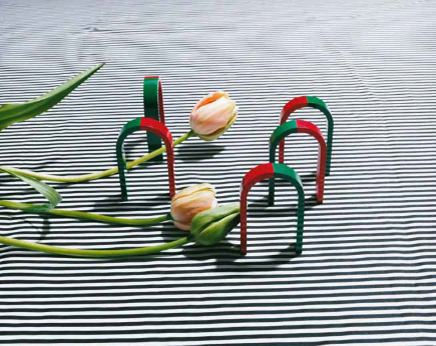

No Such Thing As History: Four Collections and One Artist
March 20 – August 8, 2014
With artworks from the Christoforakos, Lorenz, Mackert, and Wiese collections, and newly commissioned photographs by Annette Kelm
Curated by Jens Hoffmann
The exhibition No Such Thing As History: Four Collections and one Artist will inaugurate the new Espace Louis Vuitton in Munich in the spring of 2014. It will bring together a large group of contemporary artworks from four important Munich-based collections with new works by the German photographer Annette Kelm, made especially for this exhibition.
No Such Thing As History: Four Collections and one Artist looks at the concept of the collection as an archive of art. Like a library, which is an archive of literature, the collection is not only an accumulation of artworks but also a locus for the creation of meaning and a site for witnessing the developments of art history in the framework of a larger historical canon.
Collections create a context in which objects can be interpreted: they are constituted by a series of signs that together form a language and narrative. They must frame and continue past conversations as well as introduce untested questions. For a work of art to enter a collection it must strike a balance between being of permanent significance and
In recent years artists have turned to examining (art) history’s authorship and its meaning today’s world while exploring particularly the questions of what is truly knowable which ot be experienced first-hand. They have looked at the fact that much of what we think now in fact constitutes a record of (art) history that is often a fabrication created to fill id of not-knowing. History in many ways is simply fiction.
As a society, and for a number of purposes, both professional and personal, we fill these voids. As artists and curators taking on historical subjects, by revisiting, reconstructing, reimagining or even rewriting those subjects we create but also question an identity that gives us a sense of self and through that a security we deeply long for as human beings. Sometimes the new subject is an altered but earnest reconstruction, built from unverifiable raw data, some of which is correct and some of which is not. Sometimes the motivation is not a reconstruction at all but rather a new subject entirely, one that acknowledges and leverages the not-knowing in ways that give birth to a new presentness one whose signifying function is occluded by strong alterations. If there is a truth it is that history is mostly speculation, a fake with no original. To quote Jens Hoffmann:
Officias pistece atemporehent fuga. Et fuga. Runto officid quam, si abore ad ut vollabo rporum sanducitate recupta ersperi venia sus am aute venet aut dipsus alitatestrum id eatemporum, quodit, adicien delenectest, ut et dollaut fuga. Mendae. Udae am a sus estiae omnis quia eici bla id qui que volestotame vid et el in comnis excestiis quia cum si tore nullab ipic tet landelendus dipsam eost, comnimped molupic to il ipienti voluptis quunto eosamuscidus pra conseque velitio rruptiisqui commolo ratestio dolupta venimet experor sum as samenim aximint estis apedigniet estis molupta vellaudit fugiaes doluptat.
The four collections—Christoforakos, Lorenz, Mackert, and Wiese—offer an introduction to the world of today’s contemporary art containing a large variety of works of some of the most influential artists of our time including many of those who have investigated and questioned the traditional understanding of history.
The result is an exhibition that brings together approximately 30 works from the four collections, including photography, sculpture, painting, and 10 new photographs by Kelm. They will all be presented as one installation, placed alongside each other.
 Annette Kelm, Untitled. 2013. Chromogenic color print, 16 1/8" × 20 1/16" (41 × 51 cm). Courtesy the artist; Andrew Kreps Gallery, New York; and Johann König, Berlin. © Annette Kelm
About Annette Kelm
Annette Kelm was born in Stuttgart, Germany, in 1975, and now lives in Berlin. She works exclusively in the medium of photography, and her work references historically significant events or sites. She follows seemingly traditional genres such as the portrait, still life, architecture, and landscape. She usually uses an analog medium- or large-format camera and makes all her prints personally. Her work has been shown in museums around the world, including at the Museum of Modern Art, New York (2013), Presentation House Gallery, Vancouver (2012), Bonner Kunstverein, Bonn, Germany (2011), Kunst-Werke